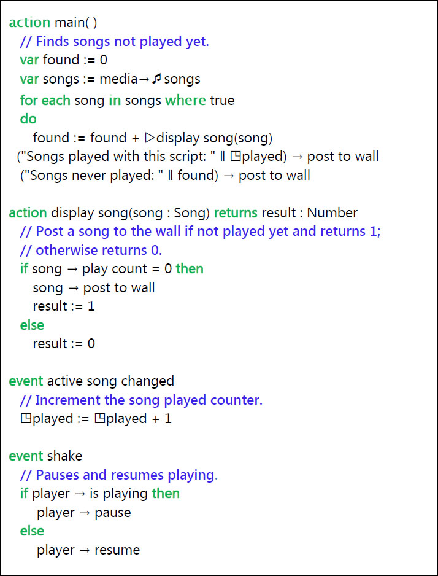

A smartphone or tablet can double as a portable music player. It can play music held as MP3 files on the device. It can play audio streamed over the internet, it can record sound using its microphone … and more.
5.1 Music
Music files can be copied onto your device by a variety of means. Music can also be purchased and downloaded onto your device from a variety of on-line services. The supported formats for music files are listed in Table 5-1. If your file is in another format, there are programs available to convert it to a supported format. The names used in the ‘container’ column of the table are likely to be the same as the filename extensions used in the filenames on the computer (e.g. “track1.mp3”), but this is not guaranteed to be the case.
Table 5-1
Supported music formats
Codec | Container | Notes |
|---|---|---|
AAC
|
M4A
| Only unprotected (DRM-free) files are supported |
MP3
|
MP3
| Layer III of MPEG-1 to be precise |
WMA
|
WMA
| Zune converts lossless WMA to another format |
The TouchDevelop API provides the media resource. However due to security restrictions, many methods of this resource are available only for use on the Windows Phone and on Android devices. On other devices, it is not possible to access song albums or the entire collection of songs held on the device.
On the Windows phone and Android devices, the media resource has methods for retrieving collections of all the songs, all the song albums, and all the playlists held on the phone. TouchDevelop does not provide any mechanism for changing any of these three collections. They are immutable. It is therefore impossible for a mistake in a TouchDevelop script to cause any music file on the phone to be accidentally deleted. The three media methods are listed in Table 5-2.
Table 5-2
Accessing media resources (WP8 and Android only)
Method | Description |
|---|---|
media→songs : Songs
| Gets a collection of all the songs on the phone |
media→song albums : Song Albums
| Gets a collection of all the song albums on the phone |
media→playlists : Playlists
| Gets a collection of all the playlists on the phone |
5.1.1 Working with collections of songs
Although the TouchDevelop documentation and this book use the words ‘music’ and ‘song’, the API calls are of course not restricted to working with music. They will work equally well with recordings made in any of the audio formats listed in Table 5-1.
Note that the TouchDevelop API also provides methods for working with audio recordings in the WAV format but these recordings are not usually used for music, they are short in duration, and they are represented in the TouchDevelop API by the Sound datatype. The Sound type is covered later in this chapter.
The methods for using songs, song albums, and playlists are listed in Table 5-3. The is invalid and post to wall methods (available for all datatypes) are omitted from the table.
Table 5-3
Using songs and song albums (WP8 and Android only)
Method of Playlist Datatype | Description |
|---|---|
duration : Number
| Returns total duration of all songs in the playlist in seconds |
name : String
| Returns name of the playlist |
play : Nothing
| Plays all the songs in the playlist |
songs : Songs
| Gets all the songs in the playlist as a collection |
Method of Song Album
|
Description
|
art : Picture
| Gets the album cover art |
artist : String
| Gets the album artist’s name |
duration : Number
| Gets the total duration of all songs on the album in seconds |
genre : String
| Gets the music genre |
has art : Boolean
| Returns true if cover art is available |
name : String
| Returns the name of the album |
play : Nothing
| Plays all the songs on the album |
songs : Songs
| Returns a collection of all songs on the album |
thumbnail : Picture
| Gets a thumbnail picture of the cover art |
album : Song Album
| Gets the album in which the song appears |
artist : String
| Gets the song artist’s name |
duration : Number
| Gets the song duration in seconds |
genre : String
| Gets the song’s music genre |
name : String
| Gets the name of the song |
play : Nothing
| Plays the song |
play count : Number
| Gets the number of times song has been played |
Method of Song Datatype
|
Description
|
protected : Boolean
| Returns true if the song is DRM protected |
rating : Number
| Gets a rating set by the user; -1 if not rated |
track: Number
| Gets the track number of song on the album |
TouchDevelop also provides one event related to songs. This is the active song changed event which is triggered at the moments that its name suggests. For example, an album or a playlist may be in the process of being played, and the event will be triggered whenever the phone advances to the next song in the list.
5.1.2 Obtaining an individual song, available on all devices
It is possible to import an individual music track into a TouchDevelop script, no matter which platform the script is running on.
One possibility is to download a music file from the web. The action
var
song := web → download song(url)
will load the music into the variable song (with type Song), where url is a string giving a URL for the location of the file.
Alternatively, the script can open a choose file dialog where the user can navigate to the music file on their computer or tablet. The usage is as below.
var
song := media → choose song
5.1.3 Playing an individual song
The play method of the Song, Song Album or Playlist types will start a song or a sequence of songs playing on the phone. For example:
song → play
More precise control over the playing of songs is provided by the player resource in the API. The methods directly related to playing songs are listed in Table 5-4.
Table 5-4
Methods of player resource for songs
Method of player resource | Description |
|---|---|
player→active song: Song
| Gets the current song, if any |
player→is muted : Boolean
| Reports whether the player is muted |
player→is paused : Boolean
| Reports whether current song is paused |
player→is playing : Boolean
| Reports whether a song is playing |
player→is repeating : Boolean
| Reports whether song is in repeat mode |
player→is shuffled : Boolean
| Reports whether the songs are shuffled |
player→is stopped : Boolean
| Reports if the player is stopped |
player→next : Nothing
| Stops current song and advances to next one in the queue waiting to be played |
player→pause : Nothing
| Pauses the current song |
player→play(song : Song): Nothing
| Adds a song to the queue of songs |
player→play many(songs : Songs) : Nothing
| Adds all songs in the collection to the queue |
player→play position : Number
| Gets the position in seconds within the current song |
player→previous : Nothing
| Stops current song and goes back to the previous one |
player→resume : Nothing
| Resumes a paused song |
player→set repeating(repeating : Boolean) : Nothing
| Sets the repeating mode for the current song |
player→set shuffled(shuffled : Boolean) : Nothing
| Sets shuffling on or off for songs in the queue |
player→set sound volume(x : Number) : Nothing
| Sets the sound volume: 0.0 is silent, 1.0 is the volume when TouchDevelop started |
player→sound volume : Number
| Gets the sound volume in the same 0 to 1 scale |
player→stop : Nothing
| Stops playing a song |
player→volume : Number
| Gets player volume, from 0.0 (silence) to 1.0 (full volume). |
When an album or a playlist is sent to the player, the player creates a queue of songs to be played. The songs will by default be played in the order that they appear in the album or playlist. However a random order will be used if shuffle is selected. Requesting a new song to be played before the current song is finished causes the current song to be terminated and the queue to be cleared (if it is not empty) before the new song starts.
Playing songs occurs in the background. This means that the player is performing its task while the device and, perhaps, the TouchDevelop script is doing other things. When a song or collection of songs is given to the player, the player remembers what it has to play and starts playing. Control is returned to the script for it to carry on executing statements while the music is playing.
The playing volume ranges from 0.0 to 1.0. The value of 1.0 does not correspond to the maximum volume which the device is capable of. The value is relative to the volume of the player as set externally to the TouchDevelop script. A script cannot play songs louder than the device’s current setting, but it can play at a quieter level by using a value less than 1.0 for the volume.
5.1.4 An example script
There are many example programs on the TouchDevelop website which select and play music. One sample program for the Windows Phone and Android platforms is reproduced below in Figure 5-1. It uses several features provided by the API.
There is one feature of this script that is not obvious when reading it. When it is run, it will display information about each song on the phone which has never been previously played. If the user scrolls through the list of displayed songs and taps one, it will immediately start playing.

Figure 5-1
The ‘new songs’ script (WP8 and Android only)
5.2 Sounds
The Sound datatype is used for audio recordings in the WAV format. This format is commonly used for uncompressed audio and therefore the files tend to be large. This format should therefore be used only for short sound clips (say 30 seconds or less), such as ring tones, sound effects or warning noises to be played by your script. For longer pieces, the Song datatype and therefore a compressed sound format should be used, if possible.
The Sound datatype provides many methods for playing the sound clip and altering its properties when played. These are summarized in Table 5-5.
Panning refers to the ability to choose whether the sound should be played wholly through the left earpiece or wholly through the right earpiece or through both together in some proportion. The pan value ranges from -1.0 for fully left to 0.0 for center (i.e. both sides equally) to 1.0 for fully right.
Table 5-5
Methods of Sound datatype
Method of Sounds | Description |
|---|---|
duration : Number
| Returns the sound clip’s duration in seconds |
pan : Number
| Gets the pan setting: from -1 for full left to +1 for right |
play : Nothing
| Plays the sound clip |
play special(volume :
Number, pitch : Number, pan : Number) : Nothing
| Plays the sound clip with values supplied for the panning, pitch and volume |
pitch : Number
| Gets the pitch adjustment from -1 to +1 |
set pan(pan : Number) : Nothing
| Sets the pan setting: from -1 for full left to +1 for right |
set pitch(pitch : Number) : Nothing
| Sets the pitch adjustment from -1 to +1 |
set volume(v : Number) : Nothing
| Sets the volume from 0 (silent) to +1 (full volume) |
volume : Number
| Gets the volume, in range 0 (silent) to +1 (full volume) |
The pitch adjustment ranges from -1.0 to 1.0. If -1.0 is selected, the playback speed is slowed down so that the pitch is lowered by one octave. The midpoint value 0.0 plays the sound clip at normal speed. The top value of 1.0 causes playback to speeded up so that the pitch is raised by one octave.
As with playing Song values, the volume is a value ranging from 0.0 to 1.0 where 1.0 is the current volume setting for the speakers as set externally of the TouchDevelop script. The script can play sounds at a quieter level than this setting but it cannot play them louder.
5.3 Microphone
Most devices have a microphone. However, the microphone cannot be accessed from a program running in a browser on a PC, Mac or Linux platform. It can be accessed on the Windows phone and the ability to access it will be supported on iPad, iPhone, iPod Touch and Android platforms in the near future.
The TouchDevelop API provides a method for activating the microphone and making a recording.
var
snd := senses → record microphone
// snd has the datatype Sound
When the above statement is executed in a script, the word “Recording…” and a stop button are displayed on the screen. Simultaneously, the microphone begins recording. When the user taps the stop button, recording stops and an instance of the Sound datatype is returned.
As noted earlier, a Sound value uses the WAV audio format and is not compressed. Therefore the microphone should not be used for long recordings.